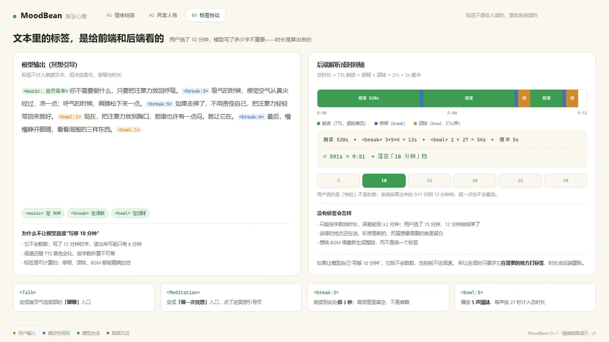
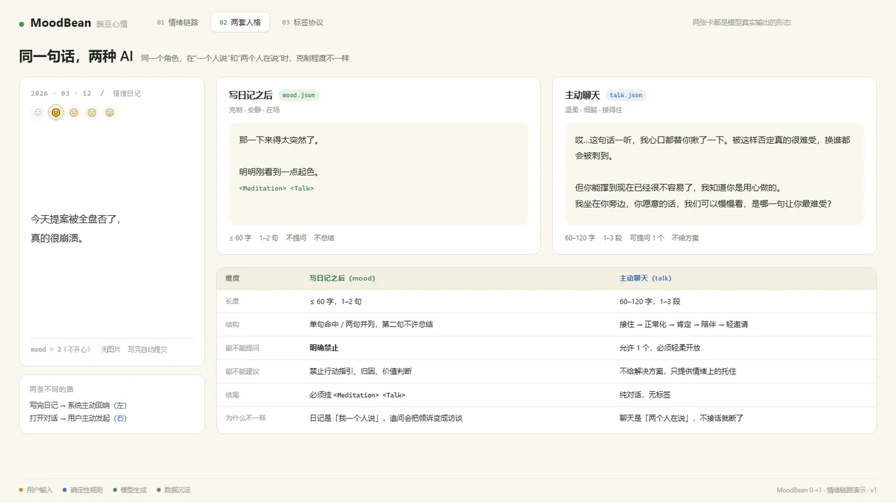
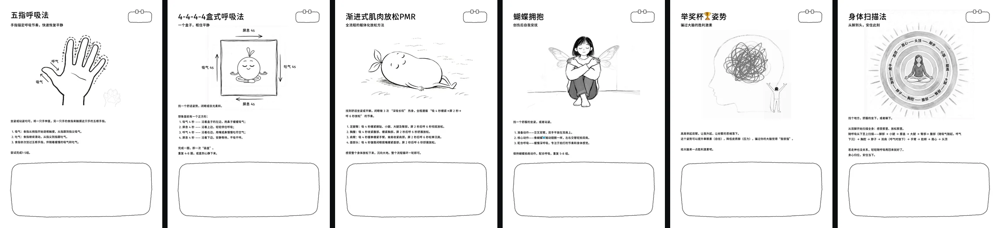
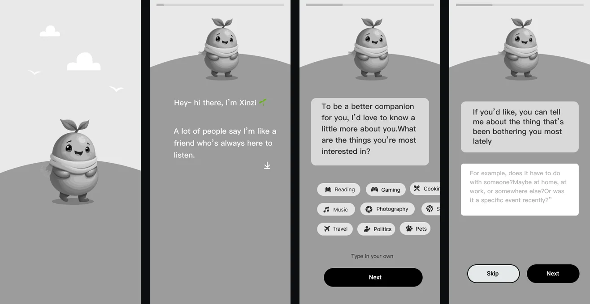
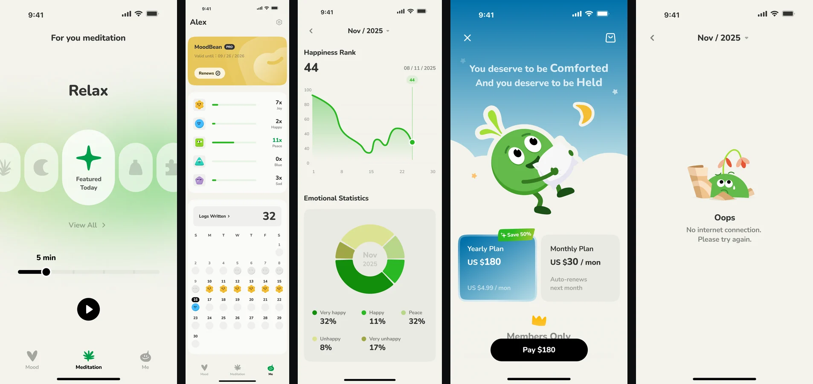

背景：立项时只有一个方向
团队只知道要做“AI 情绪管理 App”，往下全是空白：服务谁、痛点是什么、做哪些功能、和已有的冥想 / AI 陪伴产品怎么区分。没有自己的用户，也没有测试用户。
所以第一件事不是画原型，而是去用户已经在的地方看他们说什么。我抓了 Reddit、Twitter、Discord、Facebook 四个平台近 6 个月的讨论——选四个是为了避免样本偏差，选 6 个月是为了看周期性，而不是抓一个时间点的热点。
情绪被牵着走 · 缺乏自我焦点。
这两句话不只是洞察，它们直接决定了产品结构：“情绪被牵着走”对应即时干预（情绪选择、冥想生成、语音快记），“缺乏自我焦点”对应长期觉察（月度复盘、AI 记忆）。所以它不是冥想音频库，是两条腿走路。
问题：情绪产品的“假”在哪里
同类产品的通病是“像客服”：你说难过，它说“我理解你的感受，建议你试试深呼吸”。这句话没有错，但它没有接住任何东西——用户立刻知道对面是个模板。
所以真正要解的不是“能不能生成一句安慰”，而是这句话凭什么让人觉得被看见。我的判断是三点：短、准、不结束。短到不像客服；准到点中具体那一件事；不结束，让情绪有地方待着。
这三条最后变成了硬约束写进提示词：≤60 字、1–2 句、不提问、不总结、不归因、不给建议。
四个设计判断
用户选了表情就直接落库；只有没选（mood=0）才调模型判 5 级，判不出来回落“不喜不悲”。不让用户卡在“AI 没懂我”。
日记回响 60 字、不许提问；主动聊天 60–120 字、五段结构、可以邀请一次。因为“一个人说”和“两个人在说”是两件事。
回复结尾的 <Talk> <Meditation> 不是文字，是给前端的指令：变成两个疗愈入口按钮。
第四个：时长是算出来的，不是让模型数的
用户选“10 分钟冥想”，模型写的内容可能只有 6 分钟。解法不是让它数数字，而是让它在需要的地方打标签：<break:3> 停 3 秒、<bowl:5> 五声颂钵（每声 27 秒）、<music:自然森林> 换 BGM，后端按标签把总时长加出来，再归到用户选的档位。

证据：两套人格、生成能力、内容深度
同一句用户输入，两种回响
用户写：“今天提案被全盘否了，真的很崩溃。”（mood = 2 不开心）
| 维度 | 写日记之后（mood） | 主动聊天（talk） |
|---|---|---|
| 长度 | ≤60 字，1–2 句 | 60–120 字，1–3 段 |
| 实际输出 | “那一下来得太突然了。明明刚看到一点起色。” | “哎…这句话一听，我心口都替你揪了一下。被这样否定真的很难受……” |
| 提问 | 明确禁止 | 允许 1 个，必须轻柔开放 |
| 结尾 | 挂 <Meditation> <Talk> | 纯对话，无标签 |

生成能力：一条提示词，79 张一致的动作图

内容不是音频库，是技法库

从线框到终稿


结果与边界
从 10+ 候选里砍出来
付费墙与定价
需要说清楚的是：幸福指数雷达图在 PRD 里有定义，但 MVP 阶段后端只留了占位接口。我不把“设计过”说成“上线了”——这句话我在面试里也会照这样说。
复盘
最大的教训是 MVP 定义得太宽。7 个功能对一个小团队仍然偏多，导致每个功能的打磨都不够。如果重来，我会只做“即时干预”一条腿——它验证周期短、可感知；长期觉察放到 V2。
第二个教训是 AI 记忆这类功能的价值在长期，而 MVP 阶段的用户留存周期太短，根本看不出效果。这类功能要么不做，要么先做“轻量版”：让用户看得见它记住了什么。
“为什么日记里不许 AI 提问？”
日记是“一个人在说”。追问会把倾诉变成访谈，用户会开始组织语言、开始表演，情绪就跑了。聊天场景反过来——不接话就断了，所以必须邀请。
“150+ 用户的 A/B 是怎么做的？”
把同一场景下两个模型生成的内容给用户盲选并打分，同时记录调用成本。结论是“质量达标前提下选便宜的”，而不是选最聪明的——免费用户也会消耗调用。
“情绪安全怎么处理？万一用户说想死？”
提示词里明确禁止提供医疗、心理、药物建议；产品定位是轻度到中度情绪陪伴，不做治疗承诺。这一条在 PRD 里写成红线，也是我坚持不放宽的地方。